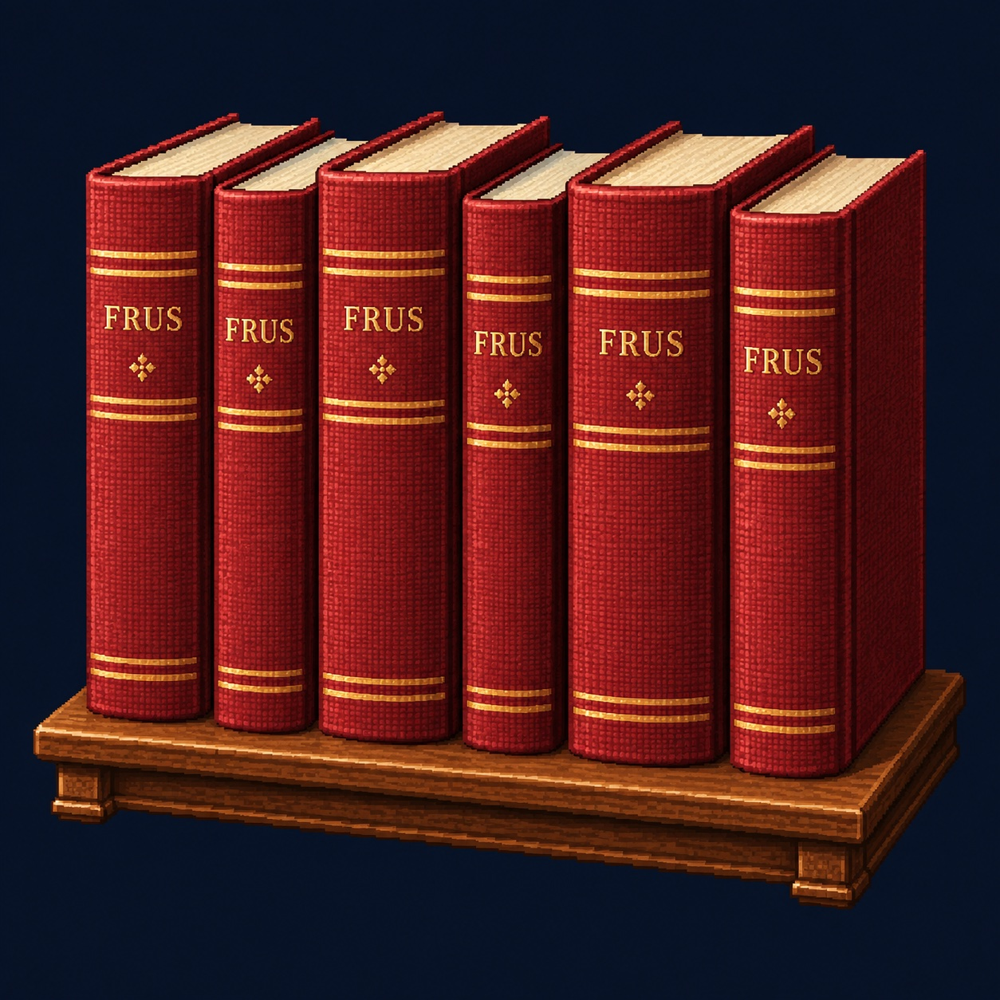
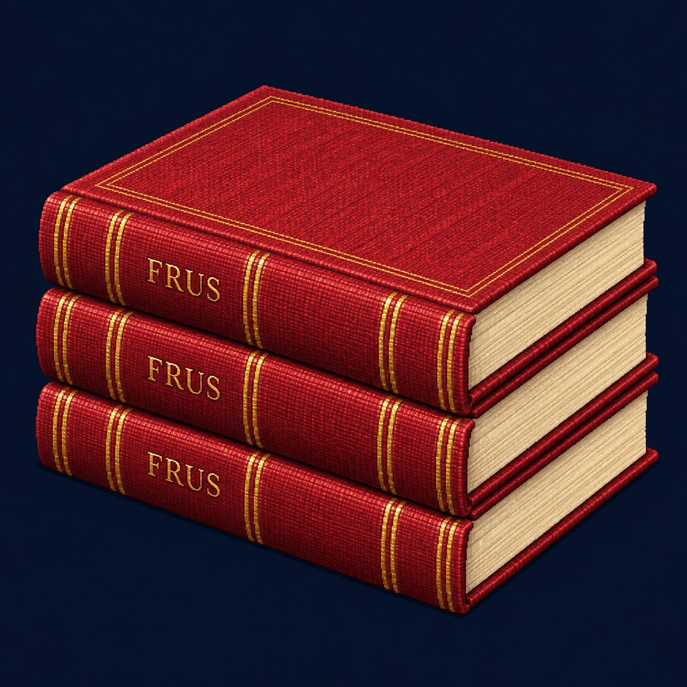
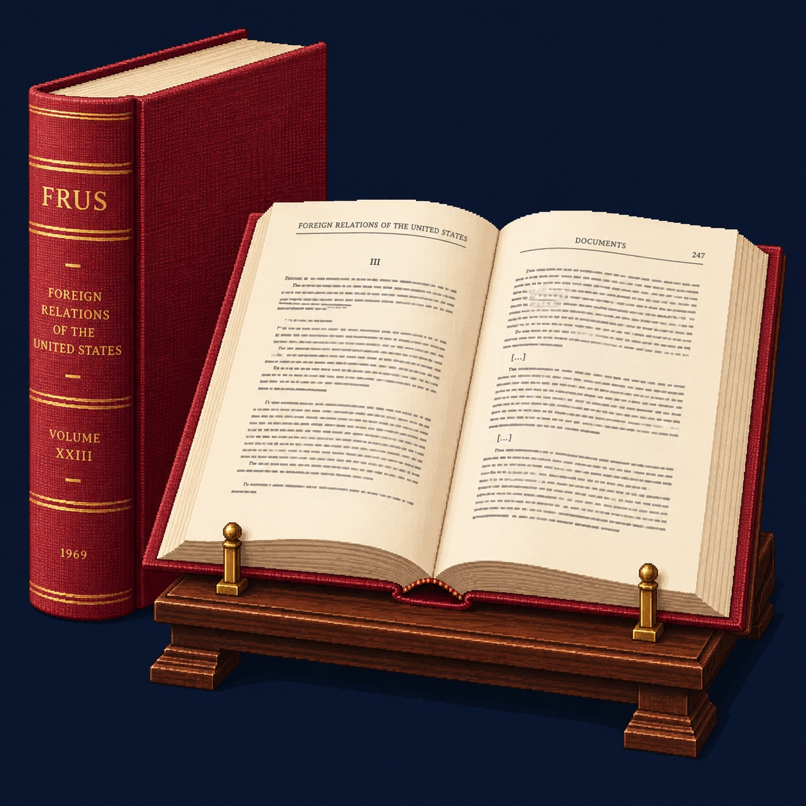

The record, bound in ruby.
Ruby-red buckram, gold-stamped spines, and cream pages: three new illustrations celebrating the familiar FRUS volume. Select an image to see every detail.
Original game artwork, generated with AI. These illustrations are not scans of specific editions or historical documents.

The shelf
A growing row of the published diplomatic record.

Bound volumes
Woven cloth, substantial bindings, and bright cream page edges.

The reading copy
From the shelf back to the historian’s desk.